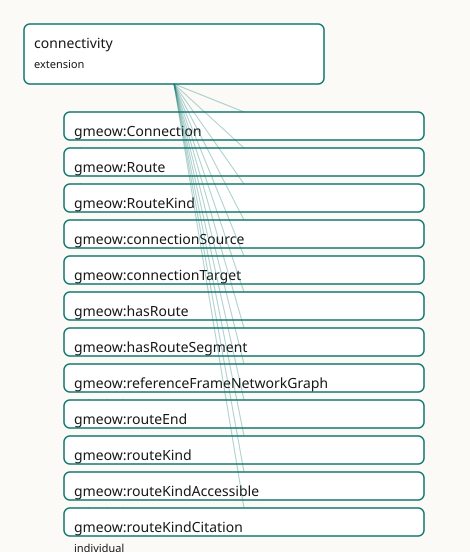

GMEOW Connectivity Module
- IRI: https://blackcatinformatics.ca/gmeow/slices/connectivity
- Tier: extension
Group: extensions
What This Slice Covers
This slice owns 20 terms and contributes 3 mapping or projection rows. Use it when its terms match the native fact you want to preserve; use the linkage tables to see how those facts leave GMEOW for consumer vocabularies.
Dependencies
Consumers
- Network/route topology for places and the virtual-location realm.
Local Map

Terms
Classes
| Term | Label | Definition |
|---|---|---|
gmeow:Connection |
Connection | A reified traversable link between two entities, able to bear its own period, cost, weight, bandwidth, confidence, and standpoint. The flat shortcut is gmeow:c... |
gmeow:Route |
Route | A traversable path through a graph of connected entities — a named, typed sequence of linked nodes with a defined start and end. Models transport lines, networ... |
gmeow:RouteKind |
Route Kind | The kind of a route — transit line, flight path, walking path, citation chain, network path, social path, dependency chain. An open value vocabulary (individua... |
Properties
| Term | Label | Definition |
|---|---|---|
gmeow:connectionSource |
connection source | The source of a reified Connection. |
gmeow:connectionTarget |
connection target | The target of a reified Connection. |
gmeow:hasRoute |
has route | Relates a thing to a route that starts from, ends at, or passes through it. |
gmeow:hasRouteSegment |
has route segment | A sub-route that is part of a larger route. A specialization of the universal gmeow:hasPart spine. |
gmeow:routeEnd |
route end | The end of a route. |
gmeow:routeKind |
route kind | The kind of a route (a RouteKind individual). |
gmeow:routeStart |
route start | The start of a route. |
gmeow:routeVia |
route via | An intermediate point that a route passes through. The order of via points is computed by the solver layer (Principle 12), not asserted in the OWL core. |
Individuals
| Term | Label | Definition |
|---|---|---|
gmeow:referenceFrameNetworkGraph |
Network Graph Reference Frame | The network graph reference frame — a named coordinate system or value space together with its axes, origin, and transformation rules (Principle 11). |
gmeow:routeKindAccessible |
accessible route | A route computed to satisfy a set of accessibility needs. The actual path is determined by the solver layer (Principle 12), not asserted in OWL. |
gmeow:routeKindCitation |
citation chain | The citation route kind — a classification of a path by the domain in which the path is traversed. |
gmeow:routeKindDependency |
dependency chain | The dependency route kind — a classification of a path by the domain in which the path is traversed. |
gmeow:routeKindFlight |
flight path | The flight route kind — a classification of a path by the domain in which the path is traversed. |
gmeow:routeKindNetwork |
network path | The network route kind — a classification of a path by the domain in which the path is traversed. |
gmeow:routeKindSocial |
social path | The social route kind — a classification of a path by the domain in which the path is traversed. |
gmeow:routeKindTransit |
transit route | The transit route kind — a classification of a path by the domain in which the path is traversed. |
gmeow:routeKindWalking |
walking route | The walking route kind — a classification of a path by the domain in which the path is traversed. |
Linkages
- Rows: 3
- Projection profiles:
schema-org - External vocabularies:
gtfs,schema
| Source | Kind | Profile | Predicate/Relation | Target | Evidence |
|---|---|---|---|---|---|
gmeow:Route |
equivalence | - |
skos:closeMatch | gtfs:Route | gmeow-connectivity.sssom.tsv; gmeow:eqConn001; confidence 0.85 |
gmeow:Route |
equivalence | - |
skos:closeMatch | schema:Trip | gmeow-connectivity.sssom.tsv; gmeow:eqConn003; confidence 0.7 |
gmeow:Route |
projection | schema-org |
projects to / <= | schema:Trip | gmeow:mapSchemaRoute; confidence 0.7; lossy: GMEOW Route is domain-generic; schema:Trip is travel-specific. RouteKind, start, end, and via metadata are dropped. |
Guide
Connectivity — traversable links, reified connections, and routes
Slice:
https://blackcatinformatics.ca/gmeow/slices/connectivity· tier: extension The universal graph layer: anything that can be traversed is said here, once.
GMEOW keeps three structural vocabularies rigorously apart: mereology (partOf — what is
made of what), RCC-8 adjacency (what touches what), and connectivity — what can be
traversed to what. This slice owns the third. The flat shortcut gmeow:connectsTo
covers the 80 % case; promote to a reified Connection when the link itself needs a
period, cost, weight, bandwidth, confidence, or standpoint (the flat-first pattern). The
constructs are deliberately universal: transit lines, network paths, citation chains,
social paths, and dependency chains are all the same machinery with a different
RouteKind value (Principle 9 — kinds are data, not subclasses). Path geometry,
ordering, and cost are computed by the solver layer (Principle 12), never asserted as
triples. The slice is part of the Location-as-reference-frame epic.
Its Principle-15 consumer, declared in the manifest: network/route topology for places and the virtual-location realm — the graph the solver walks when it answers "how do I get from here to there", physically or virtually.
The link layer
gmeow:Connection
The reified traversable link — a gufo:Relator between two entities, able to bear its
own period, cost, weight, bandwidth, confidence, and standpoint. The flat shortcut is
gmeow:connectsTo; promote when metadata matters. Connections are admissible subjects of
the accessibility slice's AccessibilityAssertion — a barrier can live on the link,
not just the endpoint.
gmeow:connectionSource · gmeow:connectionTarget
The two functional role properties of a Connection: one source, one target per relator.
Direction is the relator's, not the vocabulary's — connectsTo itself is neither
symmetric nor transitive at the universal level, which is precisely what lets genealogy
declare hasSpouse/hasSibling (symmetric) and hasParent/hasChild (directed) as
sub-properties without leaking axioms across domains.
The route layer
gmeow:Route
A traversable path through a graph of connected entities — named, typed, with a defined
start and end. A Route is a first-class entity (it has identity: "the Number 4 line"),
but its actual path geometry, via-ordering, and cost are the solver layer's to compute
(Principle 12). The OWL core records that the route exists and what it links.
gmeow:routeStart · gmeow:routeEnd · gmeow:routeVia
Endpoints (functional) and intermediate points (non-functional, unordered). The order of via points is deliberately not asserted — sequence is a solver computation, and asserting it would freeze one traversal as schema truth.
gmeow:routeKind
Functional pointer into the RouteKind vocabulary: one kind per route.
gmeow:RouteKind
The open value vocabulary of route classifications (Principle 9): seeds
routeKindTransit, routeKindWalking, routeKindFlight, routeKindNetwork,
routeKindCitation, routeKindSocial, routeKindDependency. The breadth of the seed
list is the point — the same Route machinery serves geography, networks, scholarship,
and software.
gmeow:routeKindAccessible
The bridge value for the accessibility slice (surgery): a route computed to
satisfy a set of hasAccessibilityNeed facets. The value individual lives here, beside
its value class, keeping accessibility and connectivity mutually independent sibling
extensions — the vocabulary stays open (Principle 9) and neither slice imports the other.
gmeow:hasRouteSegment
Transitive sub-route composition, a specialization of the universal gmeow:hasPart
spine: a route decomposes into legs, and the reasoner derives the segment closure. This
is the one place connectivity touches mereology — a segment is a part of its route,
while the stations it links are merely connected.
gmeow:hasRoute
The convenience hook from any thing to a route that starts from, ends at, or passes through it — the entry point for "what lines serve this station" queries.
The frame seed (Principle 11)
gmeow:referenceFrameNetworkGraph
A seeded ReferenceFrame (virtual realm, one scalar axis, crisp determinacy,
metric metricGraphHops. Network distance is frame-relative like every other value —
"3 hops" names its frame just as "3 km" names a spatial one. Virtual locations measure
their distances here.
Solver layer & alignment
Everything quantitative is deferred to the solver (Principle 12): shortest path, via ordering, cost accumulation, accessible-route satisfaction, reachability closure. The OWL core models the graph; the solver traverses it. Alignment is deferred — transport and network standards (GTFS, schema.org trip vocabulary) are projection targets once the consumer demands them, not pre-paid imports.
Dependencies
Depends on kernel and places. Depended on by genealogy (kinship bonds are
connectsTo sub-properties) and consumed by the accessibility solver path.